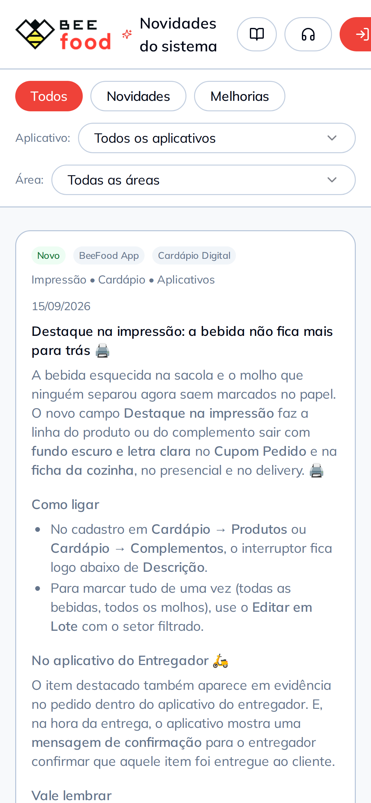

<div class="slide slide--capa">
  <div class="topo">
    <span class="logo"></span>
    <span class="contador">8 de 8</span>
  </div>

  <div class="pilha g24" style="margin-top: 50px; max-width: 880px">
    <span class="chapeu">Toda semana tem coisa nova</span>
    <h2 class="titulo titulo--pequeno">
      Acompanhe tudo que <span class="destaque">entra no sistema</span>
    </h2>
    <p class="subtitulo">
      É em <b>beefood.app/novidades</b>, e cada uma já vem com o manual do lado.
    </p>
  </div>

  <!-- Celular sozinho na faixa: centralizado (recuo igual dos dois lados) e no
       maior tamanho que a base aceita. Encostado na direita, como estava, ele
       deixava um vão à esquerda e saía 74 px menor. Sem 3D justamente porque não
       tem nada do lado para justificar a inclinação. -->
  <div class="sangria" style="top: 520px; right: 210px; width: 660px">
    <div class="celular">
      <div class="celular__tela">
        
      </div>
    </div>
  </div>

  <!-- Sem rodapé: o celular centralizado cobre a base inteira, e o endereço já
       está no subtítulo, em negrito. -->
</div>
